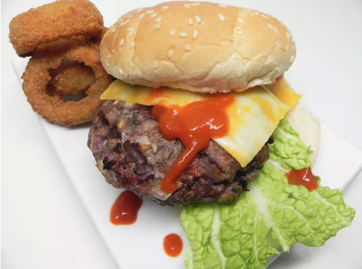

Mushroom Beef Burger

Juicy Mushroom Beef Burger Recipe
Ingredients:
- 2 pounds ground beef
- 1 (8 ounce) package mushrooms, chopped, or more to taste
- 1 onion, chopped
- 3 cloves garlic, minced
- 1 teaspoon Italian seasoning
- 1 teaspoon salt
- ½ teaspoon ground black pepper
- cooking spray
Steps:
- Remove ground beef from the refrigerator;
let stand at room temperature for 20 minutes.
- Mix mushrooms, onion, garlic, Italian seasoning, salt,
and pepper together in a large bowl. Mix in beef.
Form beef mixture into 1/2-inch-thick patties.
- Grease an indoor grill pan with cooking spray.
Cook patties in batches until browned and no longer pink in the center,
about 10 minutes per side